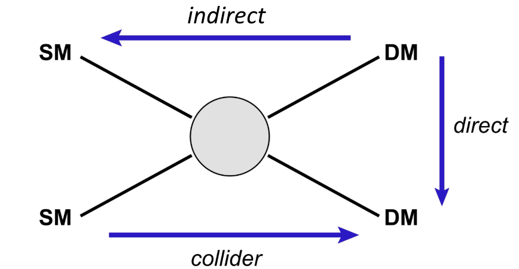
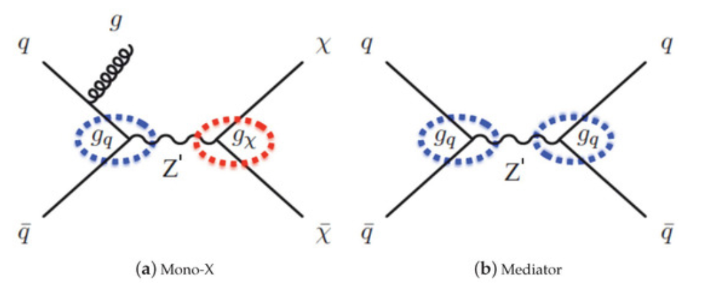

Physics Baseline¶
This section will give a short summary of Dark matter and the basic physics behind the analysis we will go through in the school.
Dark Matter¶
One of the open questions of modern-day physics is related to the properties of DM. The existence of dark matter is implied through several astrophysical obseervations including galactic rotation curves, gravitational lensing, and the cosmic microwave background.
Weakly interacting massive particles (WIMPs) are a hypothetical proposed candidate for DM. While there is no rigid definition of what constitutes a WIMP, they are generally new elemental particles that interact with the SM as weak or weaker than the weak nuclear force.
In spite of the abundance of DM, its nature remains unknown. This mystery is the subject of an active experimental program to search for dark matter particles, including direct-detection experiments that search for interactions of ambient DM with ordinary matter, indirect-detection experiments that search for the products of self-annihilation of DM in outer space, and searches at accelerators and colliders that attempt to create DM in the laboratory. The figure below shows a diagram showing the different detection techniques used to search for evidence of DM. The arrows indicate the flow of time for the different interactions, yielding a different combination of SM and DM particles.
{kind=link}
We will focus on DM produced at the LHC, but brief descriptions of Direct and Indirect detection are explained below.
Simplified Dark Matter at CMS¶
With DM particles in the GeV and TeV mass range, experiments at the LHC may be able to detect DM particles produced in the proton-proton (pp) collisions. Because DM will have negligible interactions with the SM, the DM particles would not be detected by typical detector systems, instead appearing as large amounts of missing transverse momentum. The search presented in this thesis considers a “mono-Z” scenario where a Z boson, produced in pp collisions, recoils against DM or other beyond the standard model (BSM) invisible particles. The Z boson subsequently decays into two charged leptons. This school focuses on thisa dilepton signature, and the accompanying undetected particles contribute to missing transverse momentum.
For this school we will examine a set of simplified models for DM production. These models describe the phenomenology of DM production at the LHC with a small number of parameters and provide a standard for comparing and combining results from different search channels. Four simple ultraviolet-complete models that contain a massive mediator exchanged in the s-channel are considered. For these models, the mediator (either a scalar, psuedoscalar, vector, or axial-vector) couples directly to quarks and the DM particle χ, where χ is assumed to be a Dirac fermion. Here, the couplings to Standard model quarks, the coupling to dark matter and the mediator mass are all tunable parameters leading to a wide variety of kinematic possibilities.
{kind=link}
Direct Detection¶
Direct detection experiments attempt to collect direct evidence for the presence of dark matter through the observation of low energy elastic collisions between DM particles and atomic nuclei. As DM particles pass through the Earth, they can collide with a nucleus that will emit energy (on the order of keV) as scintillation light or as phonons as they pass through a sensitive apparatus. These apparatuses are often buried deep underground in order to reduce the background, specifically from cosmic rays. Direct detection experiments primarily use either cryogenic detectors, operating at temperatures below 100 mK, or liquid detector technologies that detect scintillation originating from a collision with a noble liquid or metalloid, such as a xenon, argon or germanium nuclei.
While no evidence for DM has been found from direct detection experiments, several experiments have placed limits on the nucleon cross sections of DM interactions. Some example of recent limits from noble liquid experiments include recent results from the XENON1T, the Large Underground Xenon (LUX), the DarkSide-50 and the PandaX-ll experiments. Results from cryogenic detectors include the CRESST-III, the CDMS and SuperCDMS experiments, while additional results from bubble chambers include the PICO-60 and PICO-2L experiments.
Indirect Detection¶
Indirect detection experiments aim to search for particles originating from the self-annihilation or decay of dark matter particles in the universe. In regions of high dark matter density, DM particles could collide, annihilate and produce SM particles, either in particle-antiparticle pairs or through high energy photons (gamma rays). If the DM particles are inherently unstable, they could also decay into SM particles. Both of these processes have potential to be detected indirectly through observations of excess amounts of gamma rays, antiprotons or positrons.
In addition to self-annihilation in space, excess neutrinos from stars such as our sun may indicate the presence of DM. As DM particles pass through massive objects, they may scatter off SM particles, losing energy. This could cause an accumulation of DM particles at the center of massive objects. If these DM self-annihilate, they could be observed as an excess amount of high energy neutrinos originating from these bodies
Several experiments are already searching for these distinct signatures. The Fermi-LAT looks for excess gamma rays. The PAMELA experiment has observed an excess of positrons, that could be caused from DM particle annihilation of from pulsars. The PAMELA experiment also searched for excess antiprotons but did not observe any excess. The Alpha Mag29 netic Spectrometer (AMS-02), located on the international space station, also indicated an excess of high energy positrons. The IceCube and Super-Kamiokande neutrino observatories have presented constraints on the annihilation cross section from searches for an excess neutrino flux.